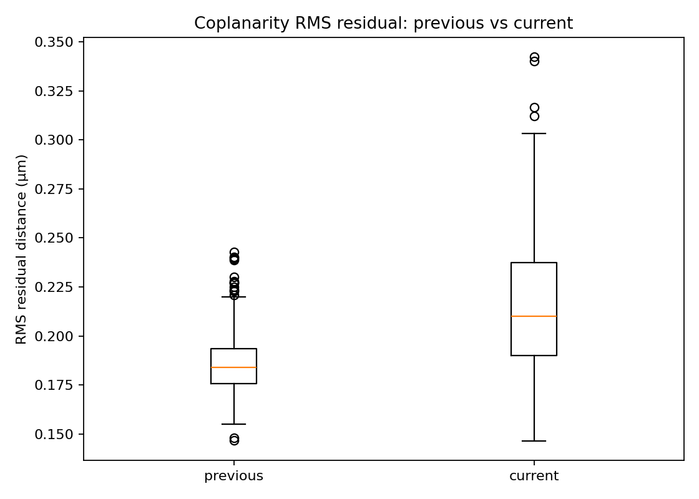
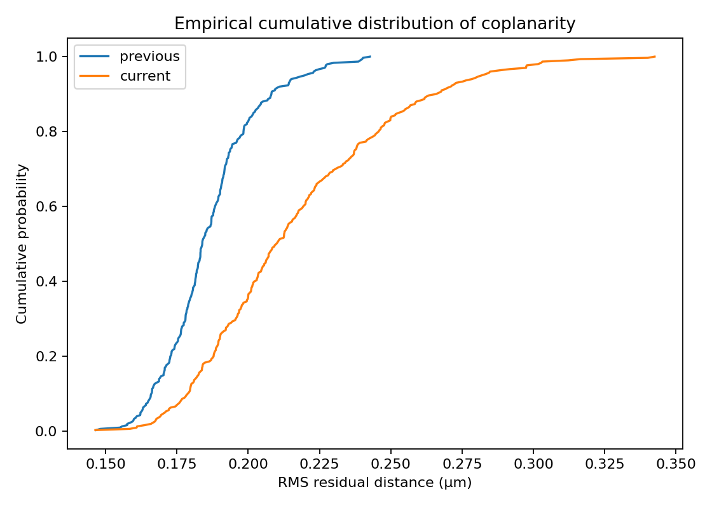
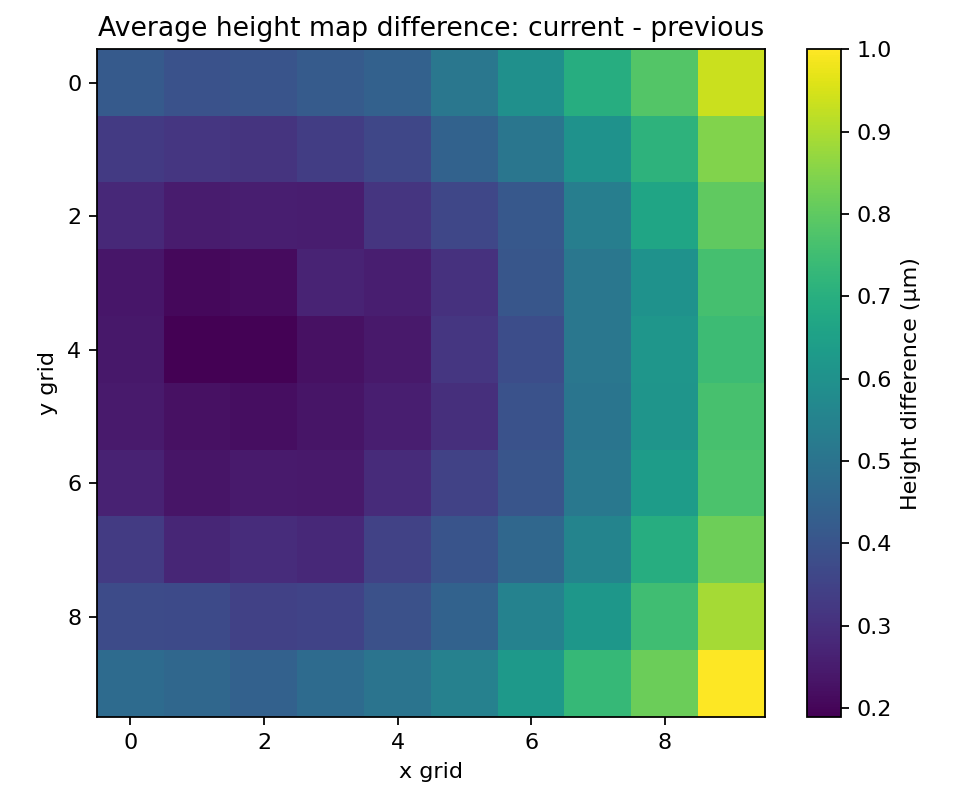
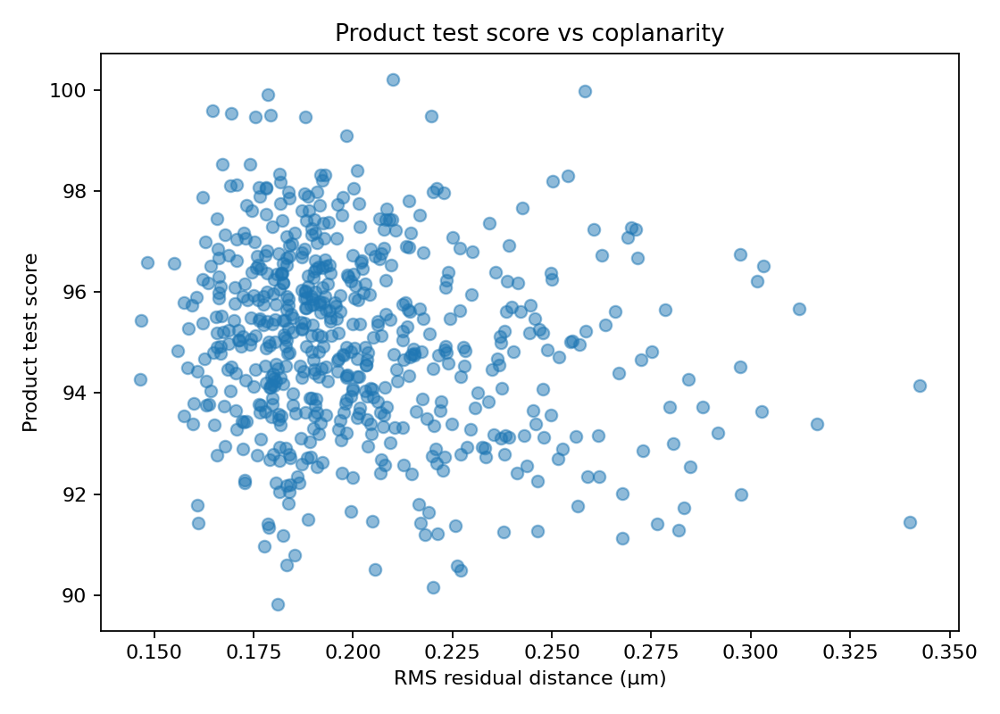

Goal: translate technical quality signals into production risk. Example: if processing time increases at Site C, the site may process fewer units per hour, which can put the shift target and shipment plan at risk.
| Status | Site | Product | Algorithm | 99th-percentile processing time | Production risk |
|---|---|---|---|---|---|
| GREEN | Site A | CameraModule-X | 2.4.1 | 135.9 ms | no immediate production risk |
| GREEN | Site A | CameraModule-Y | 2.4.1 | 151.2 ms | no immediate production risk |
| GREEN | Site B | CameraModule-X | 2.4.0 | 132.5 ms | no immediate production risk |
| GREEN | Site B | CameraModule-Y | 2.4.0 | 148.3 ms | no immediate production risk |
| AMBER | Site C | CameraModule-X | 2.4.1 | 169.3 ms | crash risk, thermal risk |
| AMBER | Site C | CameraModule-Y | 2.4.1 | 185.7 ms | thermal risk, throughput risk |
| Month | Parts | Mean RMS residual | Mean peak-to-valley | Mean product score |
|---|---|---|---|---|
| current | 300 | 0.217 µm | 1.082 µm | 94.43 |
| previous | 300 | 0.186 µm | 0.938 µm | 95.59 |



